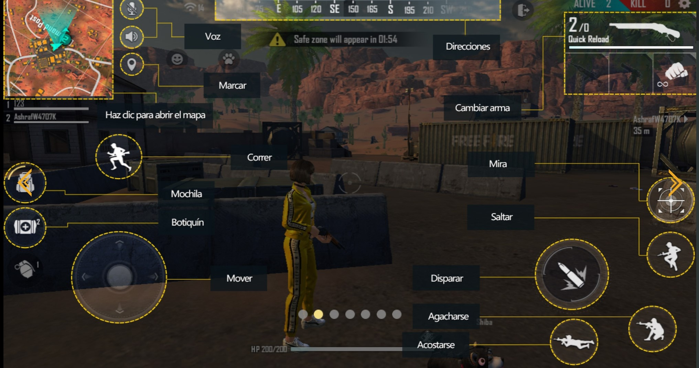
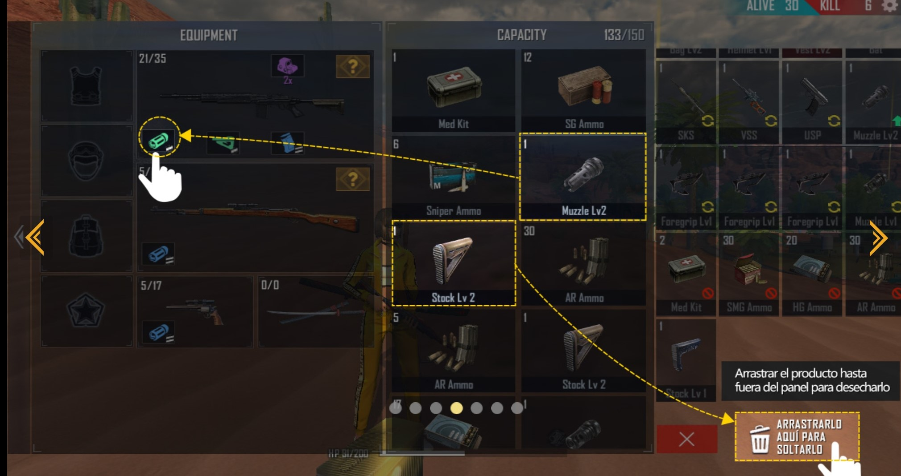
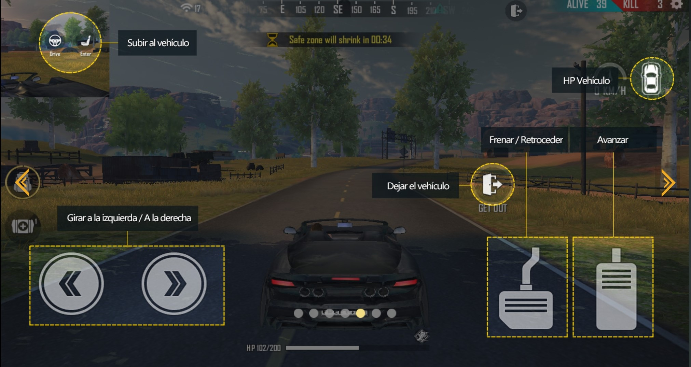
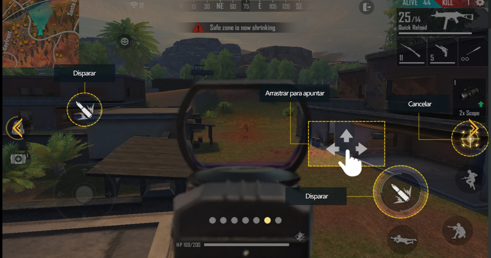
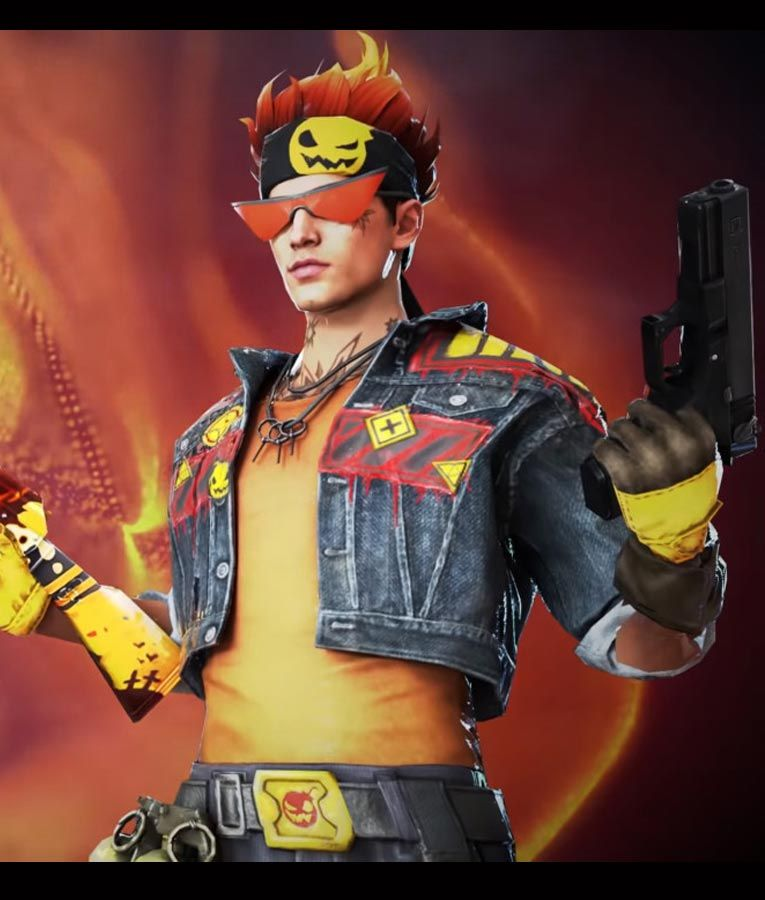
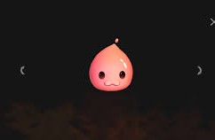

sinopsis
FREE FIRE un juego que se adapta a la mayoria de los celulares de Android y ios,reconocido por ese aspecto. Las modalidades de juego varian y se pueden llegar a jugar solo, en duo, en escuadra. podras comunicarte con tus compañeros de juego a traver de un chat o microfono. puedes mandar solicitud de amistad,asi como tambien las puedes recibir de jugadores con los que sincronizaste a jugar aleatoriamente de acuerdo al idioma que hablas en partidas de duo, escuadras. en donde los paricipantes no estan completos.
historia
Garena Free Fire (también conocido como Free Fire Battlegrounds o solamente Free Fire) es un juego móvil de acción-aventura del género battle royale, inspirado en PlayerUnknown's Battlegrounds (PUBG) - otro juego del mismo género12 y desarrollado por 111dots Studio y publicado por Garena. El juego obtuvo una beta abierta en noviembre de 2017 y fue lanzado oficialmente para Android e iOS el 4 de diciembre de 2017. Garena está trabajando actualmente en una versión mejorada de Free Fire que se llamará Free Fire Max. Se convirtió en el juego móvil más descargado de 2019, debido a su popularidad, el juego recibió el premio al "Mejor juego de votación popular" de Google Play Store en 2019. A partir de noviembre de 2019, Free Fire ha recaudado más de $ 1 mil millones en todo el mundo.
como se juega
Para empezar a jugar es necesario crear una cuenta personal en el juego, en el que tienes derecho a elegir si quieres crear una cuenta propia del juego (Cuenta de Invitado) o conectarse una cuenta de red social, como Facebook,VK, Google o Huawei ID. Después de iniciar sesión con éxito el jugador debe configurar su perfil y explorar el juego y batallas entre los demás jugadores. Hecho todo esto el jugador puede iniciar una partida en "Modo Clásico", "Modo Clasificatoria" en los mapas de Bermuda, Purgatorio y Kalahari (Campo de batalla) y luego esperar hasta que el avión vuele por encima del mapa.
Mientras el avión está sobrevolando sobre la isla, el jugador puede saltar donde desee, posibilitando así que elija un lugar estratégico para aterrizar lejos de los enemigos. Después de aterrizar, el jugador entonces debe salir a la búsqueda de armas y artículos utilitarios como medkits (botiquines), armas de corta, mediano y largo alcance, granadas, chalecos antibalas, cascos de protección, mochilas, armas de combate cuerpo a cuerpo, entre otros elementos presentados en el juego pueden ser encontrados por el mapa. (Área de batalla). El objetivo final del jugador es sobrevivir en una isla remota con un máximo de 50 integrantes en línea y todos con el mismo objetivo, tambien evitando permanecer mucho tiempo de tras de la "zona segura" (un circulo mostrado en el mapa que de a poco se hace más y más pequeño) ya que este te resta puntos de vida. Para ello es necesario eliminar a todos los adversarios que el jugador encuentre por el camino y asegurarse de que sea el único sobreviviente.
Tmbien hay otros modos de juego como "DUELO DE ESCUADRAS", "DE-CLASIFICATORIA", y otros modos que los creadores del juego los ponen por unos cuantos dias visibles en cada nueva temporada.
para mas detalles sobre el como jugar el siguiente video.
imagenes sobre los controles de la pantalla para jugar:
   genero del videojuego y otros datos
acción-aventura del género battle royale
juego recomendado para mayores de 17 años, si no cumplen este requisito sera bajo el consentimiento de los padres y responsabilidad de los mismos.
Galeria de imagenes
PERSONAJES
Adan
El primer hombre en caminar la tierra. Segun el legendario, puede cambiar el color de su piel a voluntad para aumentar la posibilidad de sobrevivir.
Eva
La primera mujer en caminar en la tierra. Segun el legendario, puede cambiar el color de su piel a voluntad para aumentar la posibilidad de sobrevivir.
Andrew

fue una vez oficial de policia. Su habilidad especialista en armadura, mejorar la durabilidad de la armadura
Miguel
Miguel es el comandante de una seccion en las fuerzas especiales. Su habilidad asesino loco, gana el EP por cada muerte.
Jai
Jai es un condecorado comandante del SWAT. Su habilidad recarga furiosa, despues de derribar a un oponente, el cagador del arma se recarga automaticamente (limitado a AR,pistola,SMG,SG)
Ford
ford fue entrenado por la marina y es extremadamente resistente. Su habilidad voluntad de hierro, reduce el daño en caso de estar fuera de la zona segura.
Olivia
Olivia es jefe de enfermera en un hospital famoso. Su habilidad toque sanador, los jugadores revividos se levantan con PV adicional.
Nikita
Nikita es una guardaespaldas profecional. Su habilidad experta en armas, recarga de ametralladoras mas rapido.
Misha

Misha es extremadamente talentosa. su habilidad fugacidad, velocidad al anejar y reducen el daño en vehiculos.
Antonio
Antonio un huérfano que se convirtió en mafioso. Su habilidad espíritu del mafioso, inicia la partida con HP adicional.
Kla
Kla es un reconocido peleador de Muay Thai. Su habilidad Muay Thai, incrementa daño con el puño.
Wukong
El rey mono. Su habilidad ilusión, puede camuflarse.
Moco
Moco es una destacada hacker. Su habilidad ojo de hacker, marca a los enemigos durante un tiempo, la información se compartira con tus compañeros.
Rafael

Rafael es un asesino sin piedad. Su habilidad muerte sigilosa, los disparos se escucharan en el mapa por un tiempo.
Laura

Laura es una gran agente especial. Su habilidad tiradora audaz, aumenta la precision al usar la mira.
A124
A124 es una robot hecha con tecnologia moderna. Su habilidad emoción de batalla, combierte PE en PV.
Shani
Shani es una ingeniera que trabaja en un deposito de chatarra. Su habilidad equipo de reparación, repara la duracion de armadura tras cada asesinato.
Alvaro
Alvaro es un demoledor salvaje pero hábil. Su habilidad arte demoledor, el daño de arma explosiva aumenta y el rango de daño aumenta.
Notora

Notora es una chica ruda miembro de una pandilla de motociclistas. Su habilidad bendición de carrera, cuando esta en un vehiculo, recupera PV cada determinado tiempo hasta 200s.
Jota

Jota es un experto en parkour y doble de riesgo. Su habilidad caza sostenida, usar SMG o escopeta para eliminar enemigos restaurará PV.
Steffie
Steffie es una profesional del grafiti. Su habilidad refugio de pintura, pinta un area de 5 metros que reduce el daño por explosivos en un cierto porcentaje y de las balas durante un tiempo, enfriamiento 45s.
Hayato
Hayato es un samurái legendario. Su habilidad bushido, cuando tu HP baje deperminado porcentaje, obtendras un porcentaje de penetración de armadura.
K

K es profesor y un experto en jiu-jitsu. Su habilidad profesor de todo, PE máximo aumenta a 50. modo jiu-jitsu: loa aliados dentro de 6m obtienen un 500% de aumento en el porcentaje de conversión de PE. Modo psicologia: recupera 2 PE casa determinado tiempo, enfriamiento de cambio de modo.
Maxim
Maxim es un comelón. Su habilidad glotonería, come y se cura rapido.
Paloma
Paloma es la reina de las armas en el bajo mundo. Su habilidad traficante, balas AR que no usan es pacio de mochila.
Caroline
una dulce chica de una familia muy rica. Su habilidad extremadamente agil, al usar una escopeta, incrementa la velocidad de movimieto.
Joseph
Joseph es conocido por ser un cientifico asi como un casanova. Su habilidad movimiento seductor, aumenta la velocidad de movimiento al recibir daño.
Alok
Alok es un DJ muy famoso, listo para romper la pista. Su habilidad ritmo brutal, crea un aura de 5m que aumenta la velocidad de movimiento y restaura PV por un tiempo.
Clu
Clu es la mejor detective privada da la actiualidad. Su habilidad rastreo de pasos, localiza la posicion de los enemigos que no estén agechados o boca a bajo dentro de un área de 40m durante un tiempo, la posición de los enemigos se comparte con los compañeros de equipo
Kapella
Kapella es una popular cantante de pop. Su habilidad cancion curativa, aumenta los efectos de los objetos de curacion y las habilidades de curacion, reduce la perdida de PV cuando te derriban.
Luqueta
Luqueta es una estrella de fútbol en ascenso. Su habilidad sombrerito, cada asesinato aumenta PV al maximo.
Kelly
Kelly es una atleta, una velocista. Su habilidad carrera, velocidad al correr aumenta.
Wolfrahh
Wolfrahh es jugador de esports y streamer. Su habilidad vistas, por cada espeectador o asesinato adicional: el daño recibido por disparos a la cabeza disminuye y el daño a los enemigos aumenta.
MASCOTAS
Al obtener cualquien mascota en el juego estos tienen nombres de origen, pero el usuario tambien puede ponerle un sobre nombre si lo decea.
Gatito
Una de las primeras mascotas que saco el free fire pero no tiene ninguna habilidad.
Perrito mecanico

Una de las primeras mascotas traida para recordar al mejor amigo del hombre, tampoco tiene alguna habilidad
Robo
Su habilidad Muro metalico, añade un escudo a la pared gloo.
poring
Su habilidad Herrería, aumenta la durabilidad del casco y la armadura.
Zorro Espiritual

Su habilidad Bien alimentado, recupera puntos de vida adicionales al utilizar el botiquín.
Pantera Nocturna

Su habilidad Entrenamiento de pesas, incrementa el espacio de inventario.
Shiba
SU habilidad Sentido champiñon, marca en el mapa los hongos cercanos a ti, cada determinado tiempo.
Lutrino
Su habilidad Doble protección, al usar la pistola de tratamiento o el botiquin, el receptor tambien recuperá algo de PE.
Detective pandita

Su habilidad Bendiciones del panda, recupera PV (puntos de vida) al matar a alguien.
Falco
Su habilidad Diversión en el horizonte, aumento de velocidad antes y despues de abrir el paracaidas, aplica para todo el equipo cuando se juega en tuo o escudra.
Sr. Wagger
Su habilidad Producción helada, cuando te falten paredes gloo el las produce para ti.
Rockie
Su habilidad Relax y rock, el tiempo de recuperación de la habilidad activa de cualquier personaje que este equipado se reduce.
ESCENARIOS
Bermuda
Alta densidad de edificios significa que esta área tiene gran cantidad de cajas y enemigos. Para convertirte en el rey de Bermuda, tienes que saber cual es el mejor lugar para aterrizart y armarte.
Kalahari
Terrenos complejos y ricos en recursos. estudiar bien cada área aumentará en gran medida tus posibilidades de supervivencia.
Purgatorio